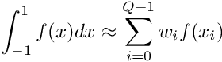

Struct used to store information and memory on the quadrature. More...
#include <jacobi.h>

Public Member Functions | |
| jac_quadrature (gauss_quad_type qtype, int nq, _Tp a, _Tp b) | |
| ~jac_quadrature ()=default | |
| template<typename _Func > | |
| _Tp | integrate (_Func fun) |
| Calculates the integral of a function with values at quadrature points given by f with quadrature weights w. More... | |
Public Attributes | |
| _Tp | alpha |
| Alpha weight of the quadrature. More... | |
| _Tp | beta |
| Beta weight of the quadrature. More... | |
| int | Q |
| Number of quadrature points. More... | |
| enum gauss_quad_type | type |
| Quadrature type. More... | |
Detailed Description
template<typename _Tp>
struct jac_quadrature< _Tp >
Struct used to store information and memory on the quadrature.
This strucuture is used to store data about the quadrature. It can be later used to integrate, derive or interpolate functions. It should be created using the jac_quadrature_alloc function.
Constructor & Destructor Documentation
◆ jac_quadrature()
|
inline |
Definition at line 78 of file jacobi.h.
References __gnu_cxx::_Tp, jac_quadrature< _Tp >::integrate(), and jac_quadrature< _Tp >::~jac_quadrature().
◆ ~jac_quadrature()
|
default |
Referenced by jac_quadrature< _Tp >::jac_quadrature().
Member Function Documentation
◆ integrate()
Calculates the integral of a function with values at quadrature points given by f with quadrature weights w.
Aproximates the integral of a function using a a quadrature.

Where  and are given by the quadrature method emplyed.
and are given by the quadrature method emplyed.
- Parameters
-
quad A structure containing quadrature information f Value of function at quadrature points
- Returns

Definition at line 220 of file gauss_jacobi_interface.tcc.
References __gnu_cxx::_Tp, and matvec().
Referenced by jac_quadrature< _Tp >::jac_quadrature().
Member Data Documentation
◆ alpha
| _Tp jac_quadrature< _Tp >::alpha |
◆ beta
| _Tp jac_quadrature< _Tp >::beta |
◆ Q
| int jac_quadrature< _Tp >::Q |
◆ type
| enum gauss_quad_type jac_quadrature< _Tp >::type |
The documentation for this struct was generated from the following files:
- include/ext/jacobi.h
- include/ext/gauss_jacobi_integrate.tcc
- include/ext/gauss_jacobi_interface.tcc